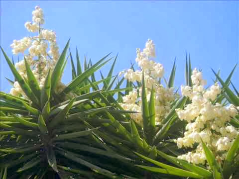

Bienvenido a nuestra página sobre El Salvador
El Salvador (en náhuat, Kuskatan), oficialmente República de El Salvador, es un país soberano de América Central ubicado en el litoral del océano Pacífico, con una extensión territorial de 21 041 km².En el año 2021 contaba con una población estimada en 6 486 023 habitantes según una estimación realizada por la Dirección General de Estadísticas y Censos en compañía de la CEPAL, y poseía una densidad demográfica aproximada de 300 hab./km², lo que lo convierte en el país más densamente poblado del continente americano, sin incluir algunas islas en el mar Caribe. Su clima es cálido tropical, pero debido al contraste geográfico el clima puede variar. El Salvador limita con Guatemala al oeste y con Honduras al norte y al este, al sureste el golfo de Fonseca lo separa de Nicaragua, y está flanqueado al sur por el océano Pacífico. Su territorio está organizado en 14 departamentos, 262 distritos y 44 municipios.San Salvador es la capital y la ciudad más poblada del país; su área metropolitana incluye 14 distritos cercanos, y concentra la actividad política y económica de la república. Las ciudades de San Miguel y Santa Ana son otros centros importantes del país. El actual territorio de El Salvador comprende lo que antes fuera la Alcaldía Mayor de Sonsonate y lo que fue la Intendencia de San Salvador, que conformó la mayor parte del territorio. Ambas provincias adquirieron su independencia de España en 1821 junto a la Capitanía General de Guatemala y en 1824 se unieron para formar el «Estado del Salvador»,como parte de la República Federal de Centro América. En la época precolombina, existía un importante núcleo indígena conocido como el Señorío de Kuskatan (que en lengua náhuat significa ‘lugar de collares’).El idioma Náhuat sigue siendo hablado en El Salvador; este, junto con el Lenca salvadoreño o Potón, son los únicos idiomas indígenas hablados en El Salvador. Desde su independencia hasta avanzada la década de los años veinte del siglo XX, El Salvador fue gobernado por conservadores y liberales. Sin embargo, sería hasta la década de los treinta que la Fuerza Armada concentraría el poder político con el respaldo de la oligarquía local, hasta finales de los años setenta, cuando un golpe de Estado finalizó esa etapa de la historia nacional. Una guerra civil, que se desarrolló entre 1980 y 1992, dejó como resultado la muerte de un aproximado de 75 000 habitantes. Dicha guerra culminó cuando el gobierno y la guerrilla firmaron los acuerdos de paz en 1992, los cuales dieron paso a reformas militares, sociales y políticas en el país. Posteriormente, durante 30 años, el poder político fue ejercido por los partidos ARENA y FMLN, quienes a medida que pasaron los años perderían apoyo popular debido a su involucramiento en fuertes casos de corrupción. Esto llevó a que, en 2019, Nayib Bukele asumiera la presidencia, rompiendo con el bipartidismo. .
Historia de El Salvador
El Salvador es un país de América Central que ha pasado por diversas épocas y periodos que han marcado su actual estado económico, político y social. Antes de la llegada de los conquistadores españoles a América, el territorio se encontraba habitado por diversos pueblos originarios que ya habían formado órdenes sociales sofisticadas. Con el sincretismo y la conquista se iría conformando la Alcaldía mayor de San Salvador y la Alcaldía mayor de Sonsonate. En 1540 el área de El Salvador es pacificada, quedando el actual territorio salvadoreño plenamente controlado por los españoles.El territorio salvadoreño forma parte del área de Mesoamérica, y se encuentra ubicado en una región que sirvió de paso de objetos e ideas a través del tiempo. Las primeras evidencias culturales en El Salvador se remontan a ocho mil años, justamente en el período arcaico (8000 a 1500 a. C.), época de grandes transformaciones en la región mesoamericana. La civilización de El Salvador data de la época precolombina, alrededor de 1500 años A.C., según lo evidencia las ruinas de Tazumal y Chalchuapa.En época precolombina el actual territorio de El Salvador estuvo ocupado por una civilización premaya, y hacia el siglo III a. C., cayó bajo la influencia de la civilización maya. Hacia el siglo XII fue ocupado por los pipiles, pueblo náhuatl de civilización tolteca. En 1823, después del derrumbe del imperio, El Salvador y sus vecinos formaron las Provincias Unidas de América Central.Hacia comienzos del siglo XX, por medio del Decreto Legislativo del 7 de junio de 1915, publicado en el Diario Oficial N.º 133, Tomo N.º 78, del 9 de junio de 1915, fue establecido definitivamente como nombre oficial «El Salvador» . El Salvador es un país con una historia centenaria e intensa que ha atravesado diferentes eras, períodos y etapas históricas
Los Simbolos del Salvador
Los símbolos patrios de El Salvador son elementos importantes de la identidad, cultura y patrimonio del país. A continuación se presentan los ocho símbolos patrios de El Salvador y su significado, según
La Bandera
La bandera nacional de El Salvador está compuesta por tres franjas horizontales de igual tamaño; la de arriba y la de abajo son de color azul cobalto y la del centro es blanca. Significado: El azul significa los dos océanos que rodean a Centro América, también representa el cielo salvadoreño. El blanco representa la paz que debe reinar siempre en nuestra tierra, así como también el acuerdo que debe existir entre todos para avanzar juntos hacia adelante como una sola nación. Fue adoptada oficialmente el día 17 de mayo de 1912.
El Escudo

El escudo nacional de El Salvador es el emblema nacional que representa al país, tanto dentro del territorio nacional como fuera de nuestras fronteras patrias. Se adoptó oficialmente en 1912, junto con la bandera actual. Su creador fue el del calígrafo salvadoreño Rafael Barraza Rodríguez, quien resultara ganador de un concurso donde se recibieron otras 300 propuestas.
El himno

Es la pieza musical que representa el patriotismo de El Salvador. Es entonado en cualquier acto cívico, oficial o deportivo que se realiza en el país o en el extranjero cuando participan salvadoreños. El Himno Nacional de El Salvador fue compuesto por el general salvadoreño Juan José Cañas y el músico italiano Juan Aberle. Se usó por primera vez el 15 de septiembre de 1879, pero fue adoptado oficialmente hasta el 13 de noviembre de 1953.
La Oracion
Es una composición que fue escrita en 1916 por el doctor David J. Guzmán. En ella se expresa el sentimiento de amor hacia la bandera y su importancia para la construcción de una nación sólida, así como también se inculca el respeta a la bandera por parte de las actuales y futuras generaciones de El Salvador. La oración a la Bandera fue reconocida oficialmente e incluida en la Ley de Símbolos Patrios el 28 de febrero del año 2001. Generalmente se reza, es decir un orador pasa al frente y dice cada frase y luego el público asistente debe repetir dicha frase, en los actos cívicos.
El Ave

El torogoz o talapo es el ave nacional de El Salvador, fue declarada como tal por un Acuerdo Legislativo que se aprobó el día 21 de octubre de 1999.Actualmente es un ave en peligro de extinción y solo se puede ver en lugares montañosos. El nombre científico del torogoz es Eumomota superciliosa; es una especie de ave coraciforme de la familia Momotidae. Habita en Centroamérica desde la península de Yucatán hasta Costa Rica. Su plumaje es de colores llamativos, así como las plumas que cuelgan de su cola. Representa a la fauna nacional.
El Arbol

En realidad existen dos árboles nacionales de El Salvador, los cuales fueron adoptados mediante un decreto legislativo el 1 de septiembre de 1939. Estos árboles son los siguientes: Maquilishuat El maquilishuat es un árbol muy hermoso, ya que en la época donde se caen sus hojas es cubierto totalmente por unas flores rosadas. Este árbol puede medir hasta 15 metros de altura. Sus grandes y majestuosas flores de color rosa, ofrecen distintos grados de intensidad en su coloración. Cuando el maquilishuat florece, es uno de los más bellos de la región.

Bálsamo El bálsamo es un árbol robusto, de madera recia y pesada, originario de la zona comprendida entre El Salvador y el sur de México, que puede llegar a medir entre 15 a 25 metros, su nombre en náhuatl significa «ungüento de colibrí». De su corteza se extrae una resina natural o savia. Era utilizado por los indígenas de América para dolores de estómago y cicatrizar heridas.
La Flor
La flor de izote es la flor nacional de El Salvador. Es una flor de color blanca que crece de un arbusto que florece mayormente entre los meses de abril y mayo; es común observar que se comercializa en mercados populares o supermercados del país, ya que es también comestible. Se declaró como uno de los símbolos patrios de El Salvador el 21 de diciembre de 1995. Representa a la flora nacional.
Comida típica
Finalmente, tal vez no como un símbolo patrio nacional, pero si como parte de nuestra identidad, hemos decidido colocar en este espacio la comida típica nacional del país, la cual es las pupusas. Es común encontrar pupusas en cualquier lugar de el Salvador, de hecho no hay salvadoreño que no las haya probado. Se pueden encontrar de varios ingredientes; de masa, de arroz, de queso, de frijol, de chicharrón, de mora, de ayote, de loroco, etc.
La Extensión Territorial en El Salvador
la extensión territorial de El Salvador es de aproximadamente 20,721 kilómetros cuadrados. Además, el país cuenta con 296 kilómetros de litoral en el Océano Pacífico que se extiende a lo largo del país. El territorio salvadoreño está dividido en 14 departamentos, cada uno con su propia extensión territorial. El departamento más grande es Santa Ana, con una extensión de 2,023 kilómetros cuadrados, mientras que el departamento más pequeño es San Salvador, con una extensión de 886 kilómetros cuadrados. En resumen, la extensión territorial de El Salvador es de aproximadamente 20,721 kilómetros cuadrados, con 296 kilómetros de litoral en el Océano Pacífico
Turismo en El Salvador
El Salvador cuenta con una gran variedad de lugares turísticos que ofrecen a los visitantes la
oportunidad de conocer su rica cultura, historia y belleza natural. A continuación se presentan algunos
de los lugares turísticos más destacados de El Salvador, según los resultados de búsqueda:
1. San Salvador: La capital de El Salvador es un lugar que no se puede dejar de visitar. Cuenta con
importantes monumentos históricos y arquitectónicos, como el Palacio Nacional, la Catedral
Metropolitana, el Museo de Arte y la Plaza Gerardo Barrios.
2. Lago de Coatepeque: Este hermoso lago de origen volcánico es uno de los lugares más visitados de
El Salvador. Ofrece vistas panorámicas impresionantes y actividades como natación, kayak y pesca.
3. Volcán de Santa Ana: También conocido como Ilamatepec, es el volcán más alto de El Salvador y
ofrece una vista espectacular desde la cima. Es un lugar ideal para los amantes del senderismo y la
naturaleza.
4. Tazumal: Este sitio arqueológico es uno de los más importantes de El Salvador y cuenta con
ruinas mayas que datan del siglo VI d.C.
5. Suchitoto: Es una hermosa ciudad colonial que cuenta con una arquitectura impresionante y una
gran cantidad de galerías de arte y tiendas de artesanías.
6. Parque Nacional Cerro Verde: Este parque nacional cuenta con tres volcanes y una gran cantidad
de senderos para caminar y disfrutar de la naturaleza.
7. Playa Costa del Sol: Es una de las playas más populares de El Salvador y cuenta con una gran
cantidad de restaurantes y bares.
8. Puerta del Diablo: Es un mirador natural que ofrece vistas impresionantes de la ciudad de San
Salvador.
9. Zona arqueológica de San Andrés: Es un sitio arqueológico que cuenta con ruinas mayas y una gran
cantidad de artefactos históricos.
10. Joya de Cerén: Es un sitio arqueológico que fue declarado Patrimonio de la Humanidad por la
UNESCO en 1993. Cuenta con ruinas de una antigua aldea maya que fue sepultada por la erupción del volcán
Loma Caldera en el siglo VI d.C.
En resumen, El Salvador cuenta con una gran cantidad de lugares turísticos que ofrecen a los
visitantes la oportunidad de conocer su rica cultura, historia y belleza natural. Desde la capital hasta
las playas y los sitios arqueológicos, hay algo para todos los gustos.
Organización territorial del Salvador
La organización territorial de El Salvador se divide en departamentos, municipios y distritos. A
continuación se presentan algunos datos y estadísticas sobre la organización territorial de El Salvador:
• El territorio salvadoreño está dividido en 14 departamentos.
• Cada departamento se subdivide en municipios que son gobernados por los concejos municipales
elegidos cada tres años de forma directa por los ciudadanos inscritos en la circunscripción municipal
respectiva.
• Desde 2023, estos municipios se subdividen en distritos.
• Frecuentemente estos departamentos son agrupados en una región independiente (la «zona
paracentral»), cuya configuración no está definida, para separarlos de San Salvador y La Libertad que
comparten el área metropolitana capitalina.
• Según la Oficina Nacional de Estadísticas y Censos, la zona paracentral abarca La Paz, Cabañas y
San Vicente, pero también otras instituciones y agencias del Estado incluyen a Chalatenango y Cuscatlán.
En resumen, la organización territorial de El Salvador se divide en departamentos, municipios y
distritos, y frecuentemente estos departamentos son agrupados en una región independiente (la «zona
paracentral»). Además, existe un Plan Nacional de Ordenamiento y Desarrollo Territorial que promueve una
estrategia integral de intervención sobre el territorio nacional orientada a la gestión del territorio y
de sus recursos bajo un enfoque de sostenibilidad.